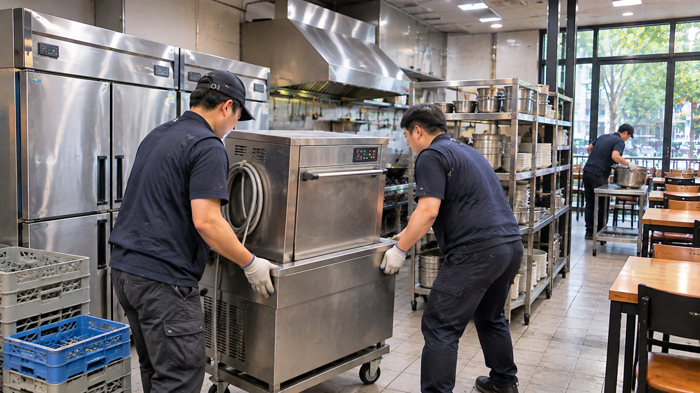

부산식당폐업 중고주방기기 매입
대형 냉장고와 냉동설비가 설치된 음식점은 장비 규격뿐 아니라 상가 출입구와 반출 통로를 확인해야 합니다. 부산식당폐업 시 중고주방기기 매입 대상과 고정 설비 철거 범위를 구분해 보세요.
부산식당폐업 전문 홈페이지 보기
업소용 주방장비 · 지역별 방문견적 · 폐업정리 상담
EVER KOREA · COMPANY INTRODUCTION
안녕하세요. 통합중고주방센터입니다. 음식점 운영을 마무리할 때 아직 사용할 수 있는 업소용 주방기기를 무조건 폐기하기보다 중고 가치를 먼저 확인할 수 있도록 상담하고 있습니다.
한식당, 고깃집, 분식점, 일식당 등 매장마다 냉장설비와 조리기기의 구성이 다릅니다. 통합중고주방센터는 제품의 모델과 작동 상태, 설치 환경 및 반출 조건을 종합적으로 검토하여 중고주방기기 매입 가능 여부를 안내합니다.
식당폐업을 준비하면서 중고주방장비 매입과 점포철거를 함께 알아보고 계신다면 재사용할 수 있는 장비와 원상복구 대상 시설을 먼저 구분하시기 바랍니다. 매장 인도 일정에 맞춰 장비 정리 계획을 세우는 것이 중요합니다.
사용하던 주방설비 목록을 확인하고 매입 가능한 중고장비와 별도로 처리해야 하는 시설을 구분합니다. 매장 운영 종료일과 임대차 계약에 따른 인도 일정을 고려하여 정리 방법을 상담합니다.
업소용냉장고, 식기세척기, 튀김기 등 주요 장비의 사진과 모델명을 바탕으로 매입 가능성을 검토합니다. 최종 가격은 제품 상태와 현장 확인 결과에 따라 달라질 수 있습니다.
여러 장비를 동시에 정리해야 하는 경우 품목별 견적과 전체 정리 조건을 함께 검토합니다. 장비 크기와 출입구, 층수, 차량 진입 여건을 확인하여 반출 일정을 상담합니다.
매입 대상 장비와 후드, 덕트 등 고정 시설의 철거 범위는 구분해야 합니다. 임대차 계약상 원상복구 조건과 전문 철거업체의 견적을 별도로 확인하면 전체 폐업비용을 계획하는 데 도움이 됩니다.
25박스·30박스·45박스 냉장고, 냉동고, 간냉식 냉장고, 테이블냉장고, 반찬바트냉장고, 육수냉장고, 참치 급냉동고 등입니다.
제조사와 용량, 냉각 방식, 압축기 작동 상태 및 내부 부식 여부 등을 확인합니다.
도어형 식기세척기와 업소용 세척설비는 제조연월, 히터 및 세척 기능, 누수 여부 등을 검토합니다. 급수와 배수 연결을 분리하기 전 정상 작동 상태를 기록하면 상담에 도움이 됩니다.
업소용 가스튀김기, 전기튀김기, 가스레인지, 가스그리들, 오븐 등 조리장비를 검토합니다. 전기 또는 가스 사양, 모델과 사용 상태에 따라 평가 기준이 달라집니다.
주방다이, 싱크대, 스테인리스 작업대와 선반은 규격과 재사용 가능성, 용접 부위의 손상 및 부식 상태를 확인합니다. 장비 구성에 따라 일괄정리 가능 여부를 상담합니다.
모든 품목의 매입을 보장하는 것은 아니며 제품 상태와 현장 조건에 따라 매입 가능 여부가 결정됩니다.
OFFICIAL SUPPORT INFORMATION
폐업을 준비하거나 폐업한 소상공인이라면 소상공인시장진흥공단의 희망리턴패키지 지원사업을 확인하시기 바랍니다.
사업정리 컨설팅, 점포철거비 지원, 법률자문, 채무조정 등 폐업 과정에 필요한 지원을 사업별 조건에 따라 안내하는 제도입니다.
지원 대상 및 신청 기간은 세부 사업마다 다를 수 있으며 지원 여부는 공식 심사를 통해 결정됩니다.
점포철거비 지원은 임대차 관계, 폐업 시점, 사업자 요건, 증빙서류와 제외 조건 등을 확인해야 합니다. 철거 계약과 비용 지출 전에 해당 연도의 신청 절차와 인정 범위를 반드시 확인하시기 바랍니다.
중고주방기기 매입금액과 점포철거비 지원금은 별개의 항목입니다. 지원 금액과 접수 가능 여부는 최신 사업공고를 기준으로 확인하세요.
통합중고주방센터는 정부 지원사업의 심사기관이 아닙니다. 지원금 지급이나 신청 승인을 보장하지 않습니다.
REGIONAL SERVICE GUIDE
지역 카테고리를 누르면 해당 지역의 식당폐업 정리 정보와 중고주방기기 매입 전문 홈페이지를 확인할 수 있습니다.
대형 냉장고와 냉동설비가 설치된 음식점은 장비 규격뿐 아니라 상가 출입구와 반출 통로를 확인해야 합니다. 부산식당폐업 시 중고주방기기 매입 대상과 고정 설비 철거 범위를 구분해 보세요.
부산식당폐업 전문 홈페이지 보기업소용 식기세척기와 조리기기는 폐업 전 작동 상태를 확인해 두는 것이 좋습니다. 울산식당폐업 주방설비 정리 시 전기·가스·급배수 분리 조건을 함께 검토하세요.
울산식당폐업 전문 홈페이지 보기여러 냉장고가 설치된 음식점은 냉장 전용과 냉동 겸용 제품을 구분해 목록을 작성하면 견적 비교가 편리합니다. 창원식당폐업 중고주방장비 상담에 활용할 수 있습니다.
창원식당폐업 전문 홈페이지 보기반찬바트냉장고와 테이블냉장고를 함께 정리할 때는 상판 규격과 냉각 성능을 확인합니다. 김해식당폐업 시 주방 전체 사진과 개별 장비 사진을 준비해 보세요.
김해식당폐업 전문 홈페이지 보기상가 인도 날짜가 정해진 경우 주방기기 매입 상담과 반출 일정을 먼저 조율하는 것이 중요합니다. 양산식당폐업 장비 정리와 원상복구 순서를 확인해 보세요.
양산식당폐업 전문 홈페이지 보기한식당과 일반 음식점의 육수냉장고, 식기세척기 등은 실제 사용 상태에 따라 평가가 달라집니다. 진주식당폐업 견적을 받을 때 장비 명판도 함께 확인하세요.
진주식당폐업 전문 홈페이지 보기주방다이와 싱크대 등 스테인리스 설비는 규격이 맞아야 재사용하기 편리합니다. 사천식당폐업 시 주요 냉장·조리장비와 작업설비를 구분해 상담하세요.
사천식당폐업 전문 홈페이지 보기대형 주방기기 반출은 건물 층수와 주차 여건 및 차량 접근 조건이 중요합니다. 거제식당폐업 일정을 세울 때 장비 이동 경로를 확인하는 것이 좋습니다.
거제식당폐업 전문 홈페이지 보기주방에서 사용하던 냉동고와 업소용 냉장고는 내부 부식이나 냉각 이상이 있는지 확인해야 합니다. 통영식당폐업 중고장비 매입 가능성을 검토해 보세요.
통영식당폐업 전문 홈페이지 보기음식점 업종에 따라 매입 대상 장비의 종류와 수량이 달라집니다. 대구식당폐업 준비 시 냉장설비와 조리기기, 세척설비를 나누어 견적을 비교하세요.
대구식당폐업 전문 홈페이지 보기하양읍과 진량읍 음식점 정리에서는 업소용냉장고와 식기세척기, 육수냉장고 및 작업대의 상태를 확인합니다. 경산식당폐업 상세 페이지에서 반출과 철거비 지원 정보도 확인할 수 있습니다.
경산식당폐업 전문 홈페이지 보기테이블냉장고와 튀김기처럼 매장 구조에 맞춰 설치한 장비는 규격과 작동 상태를 함께 살펴야 합니다. 현풍식당폐업 주방기기 매입 조건을 알아보세요.
현풍식당폐업 전문 홈페이지 보기여러 대의 업소용 장비를 정리할 때는 전체 견적에 어떤 품목이 포함되는지 확인하세요. 구미식당폐업 중고주방기기 일괄정리 상담 전 장비 목록을 준비하면 좋습니다.
구미식당폐업 전문 홈페이지 보기오래 사용한 냉장고라도 정상적인 냉각 기능을 유지하는지에 따라 재사용 가능성이 달라집니다. 김천식당폐업 시 제조연월과 냉장고 내부 상태를 확인하세요.
김천식당폐업 전문 홈페이지 보기조리설비를 정리하기 전에 연결된 가스와 전기 설비의 안전한 분리 계획을 세워야 합니다. 안동식당폐업 주방장비 반출과 점포 원상복구 범위를 구분하세요.
안동식당폐업 전문 홈페이지 보기냉장·냉동장비의 문짝 패킹과 내부 부식 상태는 중고장비 평가에 영향을 줄 수 있습니다. 포항식당폐업 매입 상담에서 정상 작동 여부를 전달하세요.
포항식당폐업 전문 홈페이지 보기음식점에서 사용하는 식기세척기와 작업설비는 재설치 여건에 따라 활용도가 달라집니다. 경주식당폐업 준비 시 주요 장비별 사진과 전체 주방 구성을 확인하세요.
경주식당폐업 전문 홈페이지 보기점포 정리 과정에서 재사용할 수 있는 장비까지 철거 대상으로 분류하지 않도록 주의해야 합니다. 대전식당폐업 중고주방기기 매입금액과 원상복구 비용을 별도로 비교하세요.
대전식당폐업 전문 홈페이지 보기부산 음식점 폐업 시 업소용 냉장설비, 조리기기 및 주방설비 구성에 따라 정리 방법이 달라집니다. 기존에 제작한 다섯 개의 전문 페이지를 통해 추가 정보를 비교하실 수 있습니다.
부산식당폐업 전문정보 21 보기 부산식당폐업 전문정보 22 보기 부산식당폐업 전문정보 23 보기 부산식당폐업 전문정보 24 보기 부산식당폐업 전문정보 25 보기사진견적은 사전 검토를 위한 과정이며 최종 매입 가능 여부와 금액은 실제 장비 및 현장 상태에 따라 결정됩니다.
FREQUENTLY ASKED QUESTIONS
여러 품목을 함께 검토할 수 있습니다. 다만 모든 장비가 매입 대상에 포함되는 것은 아니므로 전체 목록과 현장 조건을 확인해야 합니다.
제조연월만으로 판단하지 않습니다. 모델명, 냉각 성능, 내부 상태와 재사용 가능성을 종합적으로 검토합니다.
사진으로 사전 상담을 진행할 수 있습니다. 정확한 금액은 제품의 실제 작동 상태와 현장 확인 결과에 따라 달라질 수 있습니다.
서로 다른 항목입니다. 중고장비의 매입 가치와 원상복구에 필요한 철거비용은 구분하여 비교하는 것이 좋습니다.
건물에 고정된 후드와 덕트는 일반적인 이동식 중고주방기기와 다르게 철거 대상 시설로 구분하여 확인해야 합니다.
사업별 신청 자격과 제외 조건이 있으며 예산과 접수 기간에 따라 달라질 수 있습니다. 공식 홈페이지의 최신 사업공고를 확인하시기 바랍니다.
매장 위치와 장비 목록, 희망 일정을 전달한 뒤 방문 및 반출 가능 날짜를 상담하여 정합니다.
오랜 시간 운영하던 음식점을 정리하는 과정에는 여러 가지 결정이 필요합니다. 아직 사용할 수 있는 장비의 가치를 확인하고 매장 인도 일정에 맞는 정리 계획을 세울 수 있도록 필요한 정보를 안내하겠습니다.
통합중고주방센터는 중고주방기기 매입 가능 여부와 현장 조건을 바탕으로 상담합니다. 식당폐업을 준비하시는 소상공인 여러분께 조금이나마 도움이 되기를 바랍니다. 감사합니다.